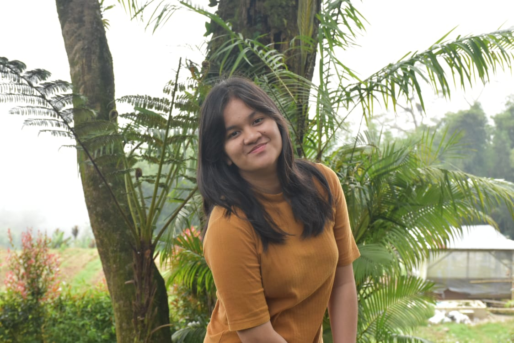
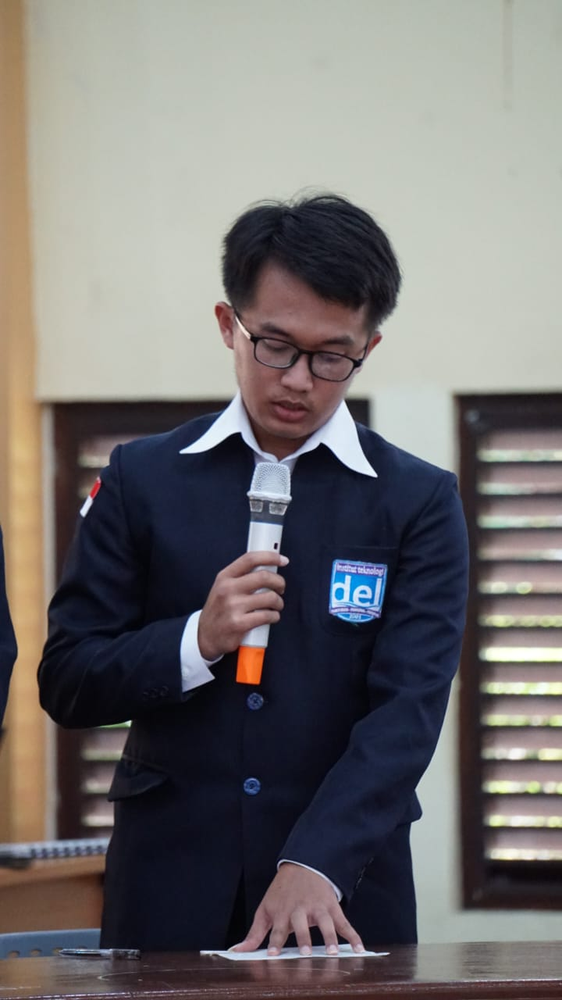

Penulis: Sri Intan Ivana Pasaribu

Tanggal posting:
Mahasiswa Informatika angkatan 2023 Institut Teknologi Del memulai perjalanan akademiknya dengan penuh semangat dan harapan besar. Sejak awal mereka diperkenalkan pada mata kuliah dasar seperti algoritma, pemrograman, dan logika informatika yang menjadi pondasi utama untuk semua pembelajaran berikutnya. Bagi sebagian mahasiswa, masa transisi dari sekolah menengah ke dunia perkuliahan terasa berat karena harus beradaptasi dengan pola belajar yang lebih mandiri dan penuh disiplin. Namun, semangat untuk mengenal dunia teknologi yang begitu luas membuat mereka terus mencoba, meski harus menghadapi kesulitan di awal perjalanan. Rasa ingin tahu yang tinggi serta dukungan dari dosen dan teman-teman seangkatan menjadi dorongan kuat untuk tetap melangkah maju.
Seiring berjalannya waktu, materi yang mereka hadapi semakin kompleks. Dari struktur data, basis data, jaringan komputer, hingga kecerdasan buatan, mahasiswa Informatika 2023 semakin ditempa untuk memahami dunia teknologi secara lebih mendalam. Proyek-proyek besar mulai bermunculan, seperti membuat aplikasi sederhana, merancang sistem informasi, atau melakukan penelitian kecil di bidang teknologi. Semua tugas itu tidak hanya menuntut kemampuan berpikir kritis, tetapi juga keterampilan kerja sama tim yang solid. Dalam setiap proyek, mereka belajar untuk berbagi peran, menyelesaikan konflik, dan menghargai kontribusi masing-masing anggota kelompok. Hal ini menjadikan mereka tidak hanya lebih pintar secara akademik, tetapi juga lebih matang secara sosial.
Kehidupan akademik yang padat sering kali membuat mereka harus mengorbankan waktu istirahat. Begadang hingga larut malam sudah menjadi hal biasa, baik untuk menyelesaikan tugas pemrograman yang error berulang kali, maupun untuk mempersiapkan presentasi keesokan harinya. Suasana ruang belajar di malam hari penuh dengan diskusi hangat, canda tawa, hingga rasa frustasi ketika program tidak berjalan sesuai harapan. Namun, dari momen-momen inilah tercipta solidaritas yang kuat, karena mereka belajar untuk saling membantu dan mendukung satu sama lain. Rasa puas ketika akhirnya program berhasil dijalankan menjadi kebahagiaan yang sulit dijelaskan, seolah semua rasa lelah terbayar lunas.
Di luar kegiatan akademik, mahasiswa Informatika 2023 juga aktif dalam berbagai kegiatan sosial yang memperkaya pengalaman mereka. Himpunan Mahasiswa Sarjana Informatika (HIMASTI) menjadi wadah bagi mereka untuk berorganisasi, melatih kemampuan kepemimpinan, dan berkontribusi pada jurusan. Selain itu, banyak mahasiswa yang terlibat dalam unit kegiatan mahasiswa (UKM) seperti olahraga, musik, tari, bahkan komunitas teknologi yang fokus pada pengembangan aplikasi atau robotika. Aktivitas-aktivitas ini membantu mereka menyeimbangkan kehidupan, sehingga tidak hanya sibuk dengan dunia coding, tetapi juga mampu mengekspresikan diri di bidang lain. Dari sinilah lahir pribadi-pribadi yang lebih seimbang antara akademik dan sosial.
Kehidupan sosial mereka semakin berwarna dengan rutinitas sederhana yang sering mereka lakukan bersama. Nongkrong di kantin setelah kuliah, bermain futsal atau lari pada sore hari, hingga sekadar bercengkerama di kamar menjadi momen yang mempererat persahabatan. Tidak hanya itu, acara besar seperti retret, dan malam keakraban selalu dinantikan oleh mahasiswa karena menjadi kesempatan untuk saling mengenal lebih dekat. Melalui kegiatan-kegiatan tersebut, mereka belajar bahwa persahabatan tidak hanya tercipta di ruang kelas, tetapi juga di luar akademik melalui interaksi sehari-hari. Kehangatan suasana kebersamaan membuat kehidupan kampus terasa jauh lebih menyenangkan.
Selain akademik dan sosial, kehidupan berasrama juga memberikan pengalaman berharga bagi mahasiswa Informatika 2023. Tinggal di asrama membuat mereka belajar mandiri sejak awal, mulai dari mengatur waktu tidur, menjaga kebersihan kamar, hingga menghargai privasi teman sekamar. Setiap pagi diawali dengan hiruk pikuk antre kamar mandi, dilanjutkan dengan aktivitas kuliah seharian penuh, lalu ditutup dengan kegiatan belajar kelompok atau diskusi santai di malam hari. Rutinitas ini mengajarkan mereka tentang kedisiplinan sekaligus kebersamaan, karena hampir semua aktivitas dijalani bersama-sama. Asrama menjadi rumah kedua yang penuh cerita, tempat di mana mereka belajar banyak hal di luar materi kuliah.
Kehidupan di asrama tentu tidak lepas dari berbagai cerita unik dan kenangan berkesan. Ada momen ketika mereka mengadakan nobar (nonton bareng) film, ada juga saat-saat ketika mereka bermain gitar hingga larut malam sambil bernyanyi bersama. Tak jarang pula mereka melanggar waktu tidur ramai-ramai ketika submitan mengejar, meski harus diam-diam agar tidak mengganggu penghuni lain. Perselisihan kecil pun sesekali terjadi, misalnya ketika ada yang kurang menjaga kebersihan kamar atau suara musik terlalu keras, tetapi semua bisa diselesaikan dengan saling memahami. Dari semua pengalaman itu, mereka belajar untuk lebih toleran, sabar, dan mampu menghargai perbedaan.
Keseluruhan perjalanan mahasiswa Informatika 2023 ini tidak hanya membentuk mereka menjadi calon sarjana yang kompeten di bidang teknologi, tetapi juga pribadi yang matang secara sosial dan emosional. Dari ruang kelas yang penuh tantangan, organisasi yang mengajarkan kepemimpinan, hingga kamar asrama yang menjadi saksi kebersamaan, semua pengalaman itu akan selalu membekas. Mereka tidak hanya mendapatkan ilmu, tetapi juga nilai-nilai persahabatan, solidaritas, dan tanggung jawab. Semua cerita suka dan duka yang mereka jalani akan menjadi kenangan indah yang menemani langkah mereka ke masa depan. Pada akhirnya, perjalanan ini adalah proses panjang yang membentuk mereka menjadi generasi Informatika yang siap menghadapi dunia nyata dengan ilmu dan karakter yang kuat.
|
|
Ivana | 06 September 2025 |
| Kompak selalu teman-teman opsional | ||
|  | Syvra | 05 September 2025 |
| Rindu wee | ||
|  | Paul | 04 September 2025 |
| Ayo makrab lagi | ||
Penulis: Sri Intan Ivana Pasaribu
Tanggal posting: